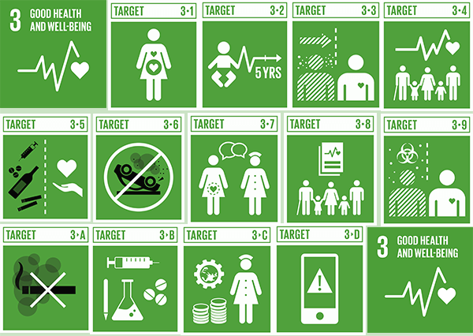

This web app is a hospital and health resource tracker that supports the third goal of sustainable development goal.
This goal supports that a healthy life should be accessible for everyone and pushes this through universal free health care with hospital aid and other resources.
The first step to this goal is to have people informed on the resources available to them.
This app is created by Geomatics Engineering students at York University so our origin will be at York University.
It is common that students develop mental stress and avoid it to stay focused on school even though it's the probable cause for stress.
The University pushes how crucial mental health is for students through emails, posters, and ads across campus.
York also provides their own health services and workshops to develop skills for school.
But for the people outside of York University or commuters that need to leave campus as soon as possible, we've created a web app that can help relocate them to nearby health resources across Toronto.
The web app can be delivered the same way the resources are spread to students.
Links to the website via email as well as having our web app on touch screen surfaces that can be found in public such as malls.
The origin will be initially be York University with the end point being a health resource from dataset.
The map will display a line of how to get to the end point.
Our datalist consists of addresses of health resources spanning from hospitals, health and mental services.
We found these locations through google searches of these topics and obtaining the latitude and longitudes of the locations within Toronto.
After obtaining our data, we created an html web application as a test to see how it would work.
Using Google Map API, we used the Maps JavaScript API as well as Google Direction API to define our map and the directions from our origin to end points.
Users will have a map and direction to a health resource that would be applicable to their needs.
Defining the path they need to take, users can find health professionals to diagnose their symptoms and be guided through rehabilitation.
It's not common knowledge of the free health resources provided by the government.
If we connected information from ads and PSAs to a direction people can connect their idea to a location and give them clear directions to help themselves.
Many places across the world don't have access to universal health care. Citizens of Canada are fortunate to have it, but still many don't acknowledge it.
If we develop technology that makes ourhealth care system more efficient, we believe health care will branch out and make things more affordable and truly raise the quality of life and lifespan.
Perfecting this technology within our borders with the mindset to reach internationally because everyone should have a right to live and to have a good and healthy life.
From this project, we learned to be a bit more caring and human as we're to think about ourselves and others.
Putting ourselves in different peoples shoes to understand that everyone's situation is different and to account for everyone because the goal is to have everyone healthy.
It's an introductory project, but we can see ourselves developing this more into a more advanced system.
This web app just shows the direction, which is the first step.
We think the next step is to make health care systems more efficient with navigation through the hospital and alleviate the work on healt care workers.
Similarily to the population of Geomatics Engineers, there is not an abundance of health practitioners and they are often overburdened.
Hopefully, we can develop more into this technology to help make the health care system more efficient so that more people can be helped.